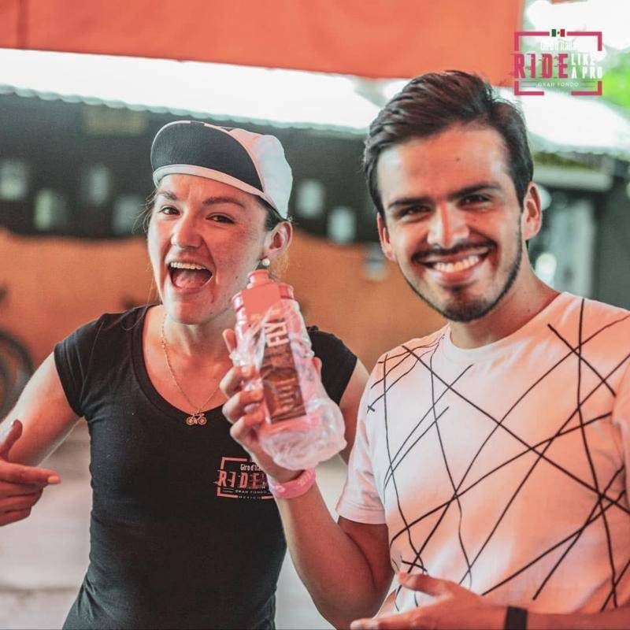
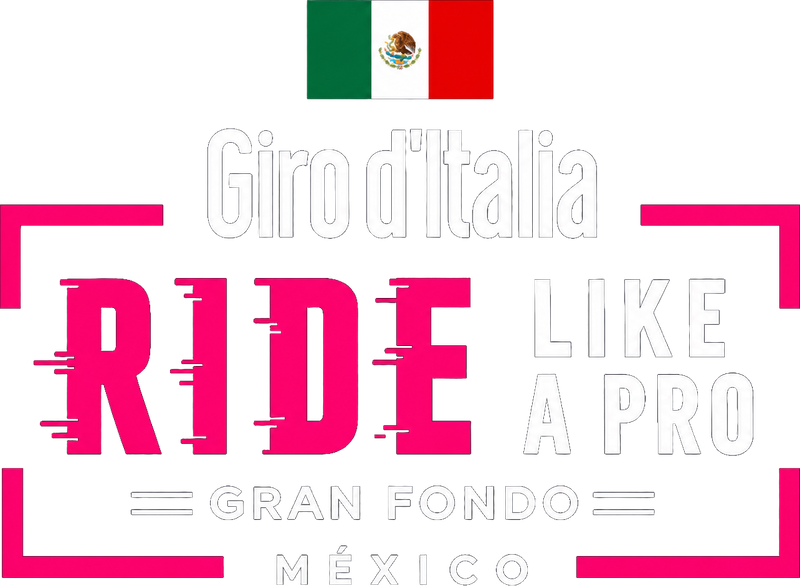
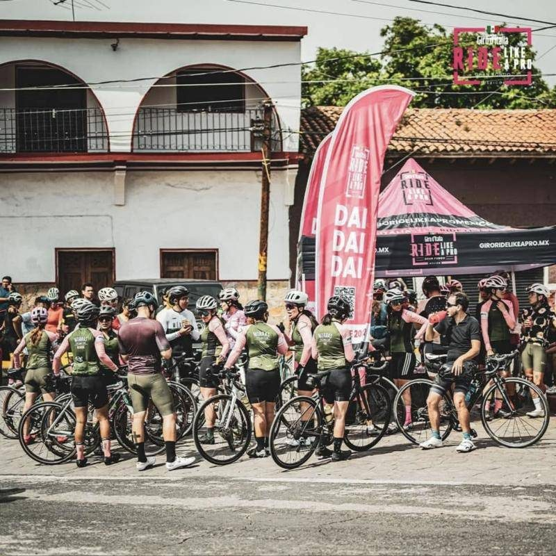
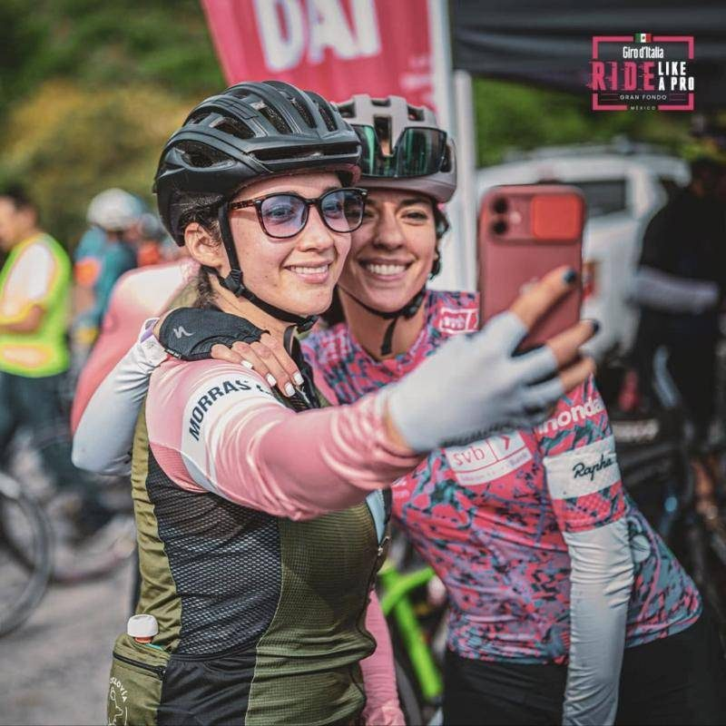
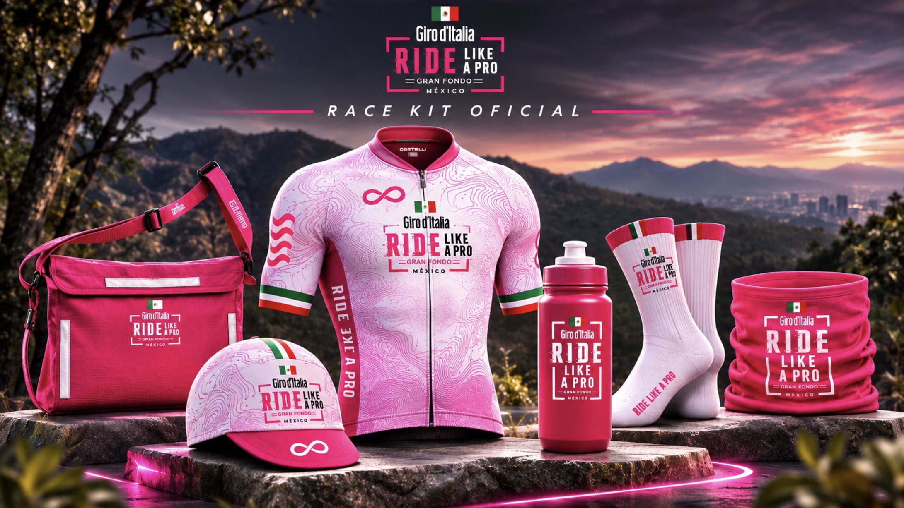

01 · Your cycling crew
La pasión se comparte.
Reúne a tus amigos, prepara el desafío y escribe una historia que comienza en la línea de salida y se celebra juntos en la meta.
Registro abierto · 28 feb 2027
El espíritu del Giro. Tu propia historia.
La grandeza del ciclismo mundial llega a México.
Una salida legendaria, kilómetros de desafío y una experiencia que va mucho más allá de cruzar una meta. Comparte la ruta, supera tus límites y vive la pasión del Giro d'Italia Ride Like a Pro.
Be the Maglia Rosa.
Las inscripciones son a través de Entusmarcas, la boletera oficial del evento.

Cómo registrarte
La inscripción se hace en Entusmarcas, la boletera oficial del evento.
Medio Fondo de 60 km o Gran Fondo de 120 km.
Da clic en «Quiero registrarme». Te llevamos a Entusmarcas para capturar tus datos y pagar.
Recibes tu confirmación y, conforme se acerque la fecha, la ruta, los horarios y la entrega de kit.
Por qué estar ahí
Una salida memorable, una ruta que te desafía y miles de personas que comparten tu pasión. Vive cada kilómetro, celebra cada logro y descubre lo que significa formar parte del Giro d'Italia Ride Like a Pro México.
 01 · La salidaDonde comienza la historia.Toma la salida desde un escenario emblemático y siente la emoción de compartir los primeros kilómetros con cientos de ciclistas.
01 · La salidaDonde comienza la historia.Toma la salida desde un escenario emblemático y siente la emoción de compartir los primeros kilómetros con cientos de ciclistas.
 02 · La rutaEl desafío que te lleva más lejos.Recorre paisajes extraordinarios, supera tus propios límites y disfruta cada kilómetro con seguridad y soporte profesional.
02 · La rutaEl desafío que te lleva más lejos.Recorre paisajes extraordinarios, supera tus propios límites y disfruta cada kilómetro con seguridad y soporte profesional.
 03 · La comunidadLa pasión se disfruta mejor juntos.Comparte la experiencia con amigos, familia y miles de apasionados que hacen del ciclismo una forma de vida.
03 · La comunidadLa pasión se disfruta mejor juntos.Comparte la experiencia con amigos, familia y miles de apasionados que hacen del ciclismo una forma de vida.
Fotos: Giro d'Italia (RCS Sport). Uso de vista previa.
GIROLAND
Al cruzar la línea de meta, la experiencia continúa en GIROLAND, el gran festival de Giro d'Italia Ride Like a Pro México.
Un espacio que celebra la cultura italiana y la pasión por el ciclismo, con gastronomía, música en vivo, exposición de grandes marcas, actividades para niños y la ceremonia de premiación.
Ven a celebrar, descubrir y compartir. No necesitas subirte a una bicicleta para vivir la experiencia del Giro.



GIROLAND
La energía del ciclismo toma otra dimensión en GIROLAND. Música, gastronomía, entretenimiento, exhibiciones, marcas, experiencias y actividades para toda la familia.
Un gran punto de encuentro donde el deporte, el lifestyle y la pasión por la bicicleta se convierten en una celebración.
Aquí todos forman parte del Giro.
Fotos: Giro d'Italia (RCS Sport), Unsplash (Margo Evardson, Ihnatsi Yfull) y Giro Ride Like a Pro México. Uso de vista previa.
02 · La ruta
El Giro comienza en el corazón de México.
Desde el corazón de la Ciudad de México comienza un recorrido diseñado para desafiar tus límites. Una salida emblemática, kilómetros de paisajes extraordinarios y el espíritu del Giro d'Italia acompañándote en cada pedalada.
Descubre los recorridos, conquista cada ascenso y prepárate para vivir una experiencia que va mucho más allá del ciclismo.
Datos de ruta en validación03 · The Giro Community
Hay experiencias que se disfrutan más cuando se viven juntos. Reúne a tu equipo, comparte la ruta, anima desde la meta y celebra cada momento. Porque el Giro d'Italia Ride Like a Pro México es mucho más que una carrera: es una pasión que nos conecta.

Reúne a tus amigos, prepara el desafío y escribe una historia que comienza en la línea de salida y se celebra juntos en la meta.

Comparte la emoción con quienes siempre están contigo. Una experiencia para disfrutar en familia, dentro y fuera de la ruta.

Acerca a los más jóvenes al mundo de la bicicleta y comparte con ellos la emoción, los valores y la pasión del deporte.

Conquista nuevos retos, acompaña a quien quieres y celebra cada kilómetro de esta experiencia.
No necesitas competir para vivir el Giro. Ven a disfrutar la emoción de la salida, anima a los ciclistas y celebra con ellos en GIROLAND. La pasión por el ciclismo también se vive desde afuera de la bicicleta.
Fotos: Giro Ride Like a Pro México y Unsplash (Elena Makarevich, Brett Wharton). Uso de vista previa.
Choose your challenge
Dos maneras de vivir el Giro d'Italia Ride Like a Pro México. Elige tu desafío, conquista la ruta y descubre hasta dónde puedes llegar.

Una distancia para disfrutar cada kilómetro, poner a prueba tu resistencia y descubrir de lo que eres capaz. El equilibrio perfecto entre desafío, estrategia y pasión por el ciclismo.

Para quienes buscan llevar su resistencia al límite. Una experiencia de fondo que exige preparación, determinación y carácter. Cada ascenso y cada kilómetro forman parte de tu propia historia.
Fotos: Giro d'Italia (RCS Sport). Uso de vista previa.
Race kit oficial
Jersey oficial, musette, gorra, ánfora, calcetas y cuello multiusos de la edición mexicana de Ride Like a Pro.

Salida en el Zócalo, ruta con apoyo y una meta que se celebra como en Italia.
Contacto para clubes y equipos
Reúne a tu club, equipo o comunidad ciclista y participa en una de las grandes celebraciones del ciclismo. Contáctanos y descubre cómo organizar la inscripción de tu grupo.
Resolvemos tus dudas
¿No encuentras tu respuesta? Escríbenos a participantes@giro-mexico.com.
El domingo 28 de febrero de 2027, en la esquina de la avenida 20 de Noviembre y el Zócalo, Centro Histórico de la Ciudad de México. La estación de Metro más cercana es Zócalo/Tenochtitlan (Línea 2). Los horarios de salida por distancia se publicarán con la ruta.
Hay dos distancias: Medio Fondo de 60 km para ir por más y Gran Fondo de 120 km para la experiencia completa. Si buscas algo recreativo, el Piccolo Fondo se vive dentro de GIROLAND.
La ruta, la altimetría y los puntos de hidratación se publicarán en la sección La ruta y se compartirán directamente con las personas registradas.
Es la zona de hospitalidad. Al cruzar la meta, los ciclistas y acompañantes acceden al área recreativa oficial del Giro d'Italia, con feria gastronómica italiana, música en vivo, zona de exposición de marcas, actividades infantiles y la ceremonia de premiación.
El race kit oficial incluye jersey, musette, gorra de ciclismo, calcetas, cuello multiusos y ánfora, además de número con chip de cronometraje, medalla finisher, hidratación y apoyo en ruta, y acceso a GIROLAND.
Te enviaremos los detalles de entrega de kit cuando se acerque la fecha.
Sí. Escríbenos a clubes@giro-mexico.com con el nombre del club, el capitán y el número estimado de ciclistas, y te ayudamos a organizar a tu equipo.
El registro requiere confirmar mayoría de edad. Si necesitas información para un menor, escríbenos a participantes@giro-mexico.com.
Las opciones disponibles se indican en el reglamento y en Entusmarcas, la boletera oficial. Si tienes un caso particular, escríbenos y te orientamos.
Giro d'Italia Ride Like a Pro · México 2027
El corazón de la Ciudad de México será el escenario de una experiencia extraordinaria. Una salida emblemática, una ruta espectacular y miles de apasionados por el ciclismo.
Foto: Zócalo, CDMX · Luis Andrés Villalón Vega / Unsplash · Portada: Giro d'Italia (RCS Sport), uso de vista previa